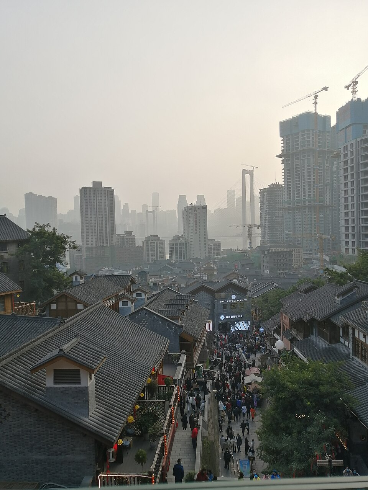
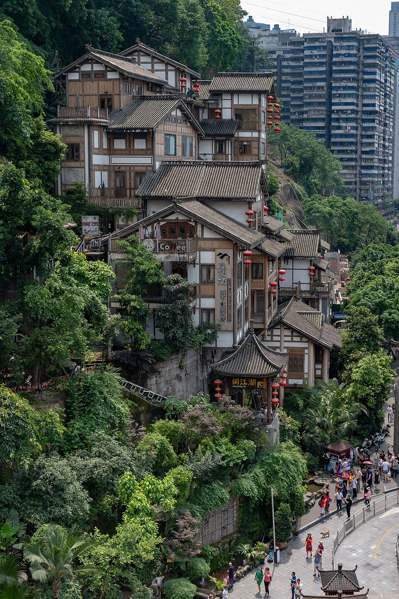

李子坝单轨看单轨列车直接穿过高楼。在 Instagram 查看 ↗Instagram： instagram.com/explore/tags/liziba/摄影：David290 · CC BY-SA 4.0 · 来源
十八梯陡峭的传统街道与修复后的山城巷道。在 Instagram 查看 ↗Instagram： instagram.com/explore/tags/shibati/摄影：Daredemodaisuki 114514 · CC BY-SA 4.0 · 来源
长江索道短途空中跨江，欣赏重庆江景与天际线。在 Instagram 查看 ↗Instagram： instagram.com/explore/tags/chongqing/摄影：xiquinhosilva · CC BY 2.0 · 来源